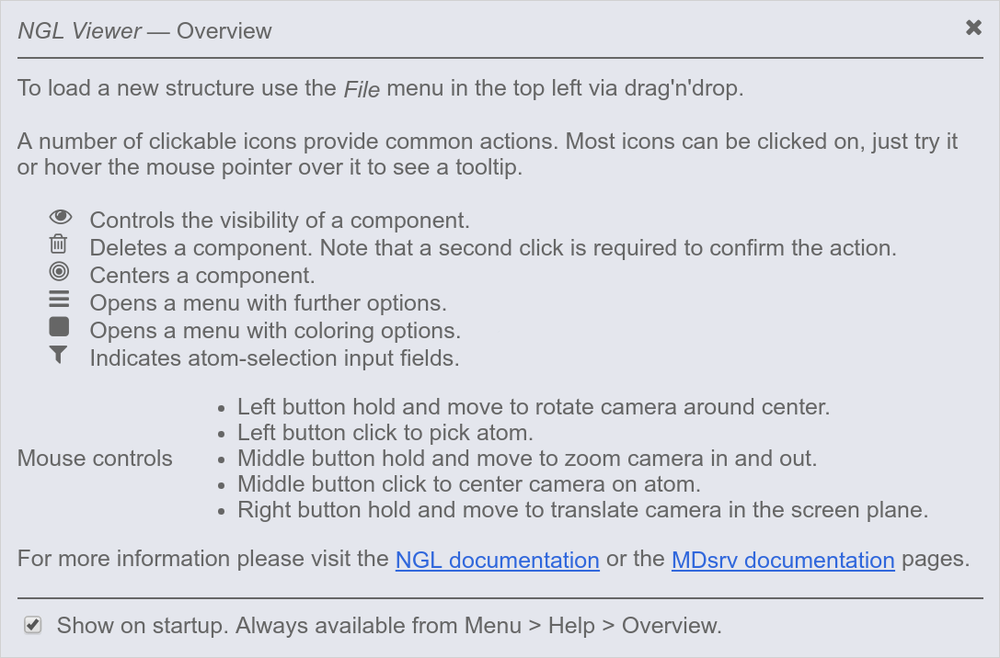
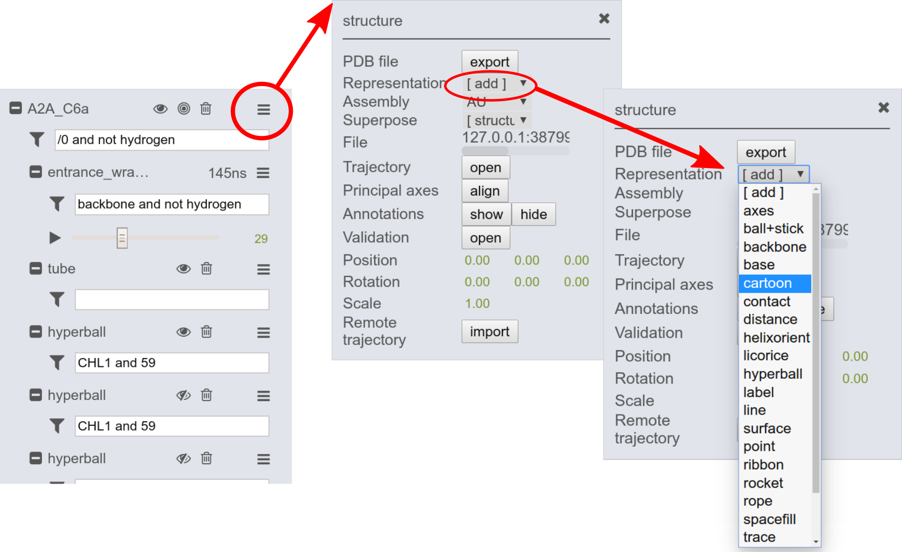
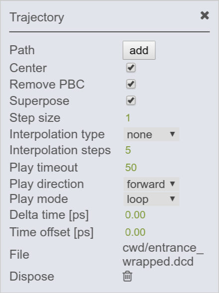

Viewing simulations
To view simulations provided by the MDsrv, no installation is required. The client only has to follow a link to the session provided (e.g. by a collaborator) to view the simulations. To protect the data provided, on demand a user and a password can be defined for login. Scalable molecular graphics for the MDsrv web application are provided by the NGL Viewer. The NGL Viewer requires your browser to support WebGL which is standard in almost all modern web browser. If you run into problems, please consult the FAQ.
Quick usage guide
In the following, we provide an example that guides you through the NGL GUI (graphical user interface) and highlights its main features. If you click on the provided URL (e.g. http://proteinformatics.charite.de/MDsrv-example2), the gui opens and the following information window will pop on, listing the standard NGL GUI symbols:
NOTE: Click on the figure to increase the size.
To view the simulation, press the play button (A). The panel also highlights the frame number (B) and the runtime (if the delta-time is provided) (C).


The default representation of the structure can be changed within the GUI. Add new representations through the structure menu by clicking on the add button. Here you can choose from various representation types.
NGL selection language
The content of a structure can be specified through the filter selection input field (e.g. "/0 and not hydrogen"). The same applies for each representation. Note that if a selection is specified via the structure filter selection (parent filter field), those also apply for the simulation and representation filters (does not need to be mentioned again).
- * everything/all.
- not _h no hydrogens
- protein protein (no ions, lipids, water, HETATMs)
- hetero hetero atoms / HETATM
- :B chain
- .CA atom
- @703 atomindex
- 10-15 range of residues
- /0 number of model within the structure file
NGL GUI overview

The NGL GUI provides also other options:
New structures can be loaded via drag'n'drop.
Another option is to load structures through the File menu (A):
- local files via Open...
- deployed files via Import...
- PDBs via entering the PDB-ID
Images can also be generated (simple via Screen-shot and with further options via Export image...).
Within the View menu (B), the GUI settings can be changed.
The Help menu (C) provides more information and can also change the general Preferences.
A number of click-able icons provide common actions. Most icons can be clicked on, just try it or hover the mouse pointer over the icon to see a tool tip.
Trajectory menu
The trajectory can be adjusted through options in the trajectory menu. To open the trajectory menu click on the menu symbol (red circle). Here, you may adjust the play timeout to speed up/slow down the simulation.
Other options are presented in the right figure. There, standard settings, configured by the provider can be adjusted, e.g. centering, removal of periodic boundary condition (PBC) and superpositioning with regards to the selection stated in the trajectory input field (here "backbone and not hydrogen").
Representation menu
Each representation can be changed and modified by entering the menu located next to the representation (over its filter field). On the right, options for modifying the cartoon representation are shown.
Loading simulations
Simulations can be loaded in several different ways into the NGL GUI. The main focus of the MDsrv is to make deposited (remote) simulations available. Still, we provide an option for clients to load their local trajectories, e.g. for comparison. Go here to find more about how to load a trajectory.
More
If you have any questions, found some bugs, or want to report enhancement requests use the Issue Tracker, use the contact formular or write a mail to johanna.tiemann@gmail.com or alexander.rose@weirdbyte.de.
Please give us feedback!